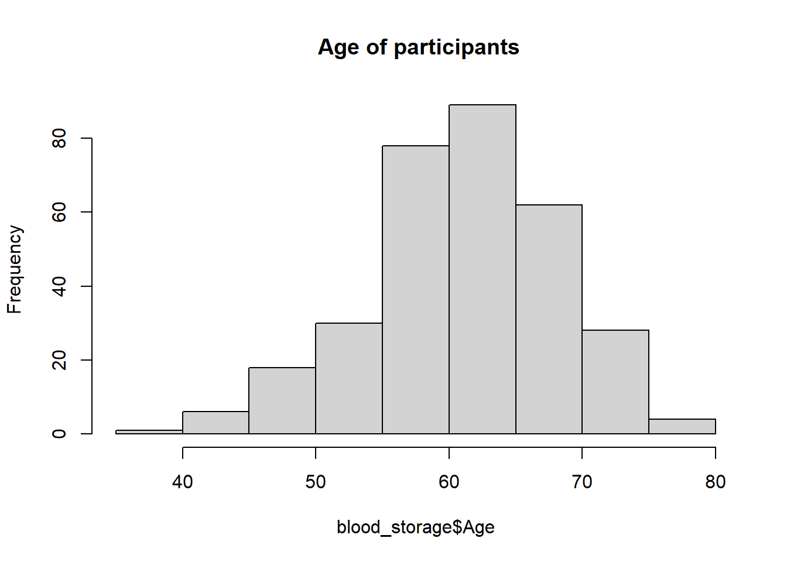

file_path <- here::here("data/blood_storage.rda")
load("C:/Users/Chris/OneDrive/Desktop/Finalproject/data/blood_storage.rda")
print(file_path)[1] "C:/Users/Chris/OneDrive/Desktop/Finalproject/data/blood_storage.rda"Quarto enables you to weave together content and executable code into a finished document. To learn more about Quarto see https://quarto.org.
When you click the Render button a document will be generated that includes both content and the output of embedded code. You can embed code like this:
The blood_storage files contains survey data on patients that are diabetic. It contains information about their ages, recurrence frequency, and blood sugar levels. People with diabetes using insulin therapy should regularly monitor their blood glucose levels. This is especially important to people using basal insulin, who should have a meter and glucose strips available in case of hypoglycemia
In this Quarto report, I conducted an analysis with the objective of exploring the different variables associated with blood_storage.
file_path <- here::here("data/blood_storage.rda")
load("C:/Users/Chris/OneDrive/Desktop/Finalproject/data/blood_storage.rda")
print(file_path)[1] "C:/Users/Chris/OneDrive/Desktop/Finalproject/data/blood_storage.rda"completedata<-na.omit(blood_storage)Age<- c (72.1,73.6,67.5,65.8,63.2,65.4,67.1)
std_dev <- sd(Age)
print(std_dev)[1] 3.733376tbl_one <- tbl_summary(
blood_storage,
by = T.Stage, # Group by Age
include = c(Age,FamHx, TVol, PVol, bGS, PreopPSA)
) %>%
add_overall()13 missing rows in the "T.Stage" column have been removed.# Print the summary table
tbl_oneCharacteristic |
Overall |
1 |
2 |
|---|---|---|---|
| Age | 62 (56, 66) | 62 (56, 66) | 61 (54, 68) |
| FamHx | 66 (22%) | 58 (22%) | 8 (24%) |
| TVol | |||
| 1 | 60 (20%) | 59 (22%) | 1 (2.9%) |
| 2 | 146 (49%) | 138 (52%) | 8 (24%) |
| 3 | 92 (31%) | 67 (25%) | 25 (74%) |
| Unknown | 5 | 5 | 0 |
| PVol | 49 (41, 64) | 50 (41, 64) | 44 (38, 56) |
| Unknown | 8 | 7 | 1 |
| bGS | |||
| 1 | 178 (59%) | 177 (66%) | 1 (2.9%) |
| 2 | 92 (30%) | 72 (27%) | 20 (59%) |
| 3 | 32 (11%) | 19 (7.1%) | 13 (38%) |
| Unknown | 1 | 1 | 0 |
| PreopPSA | 6.2 (5.0, 9.0) | 6.2 (5.0, 8.7) | 7.4 (4.7, 22.3) |
| Unknown | 2 | 2 | 0 |
| 1 Median (Q1, Q3); n (%) |
|||
median_age <- inline_text(tbl_one, variable = "Age", column = "stat_1")
median_TVol <- inline_text(tbl_one, variable = "TVol", column =
"stat_1")As Table 1 shows, the overall median(IQR) age is 62 (56, 66).
As Table 1 shows, the overall median (IQR) age is NA
hist(blood_storage$Age,main=" Age of participants")
here::i_am("usethistoaactuallyrunthecode.qmd")here() starts at C:/Users/Chris/OneDrive/Desktop/Finalprojecttbl_uvregression(
blood_storage,
y = AA,
include = c(Units, PVol,
T.Stage, bGS, PreopPSA),
method = glm,
method.args = list(family = binomial()),
exponentiate = TRUE)Characteristic |
N |
OR |
95% CI |
p-value |
|---|---|---|---|---|
| Units | 316 | 0.97 | 0.80, 1.13 | 0.8 |
| PVol | 307 | 1.00 | 0.98, 1.01 | 0.5 |
| T.Stage | 303 | 0.43 | 0.10, 1.28 | 0.2 |
| bGS | 314 | 0.90 | 0.57, 1.39 | 0.7 |
| PreopPSA | 313 | 1.04 | 1.00, 1.09 | 0.041 |
| 1 OR = Odds Ratio, CI = Confidence Interval |
||||